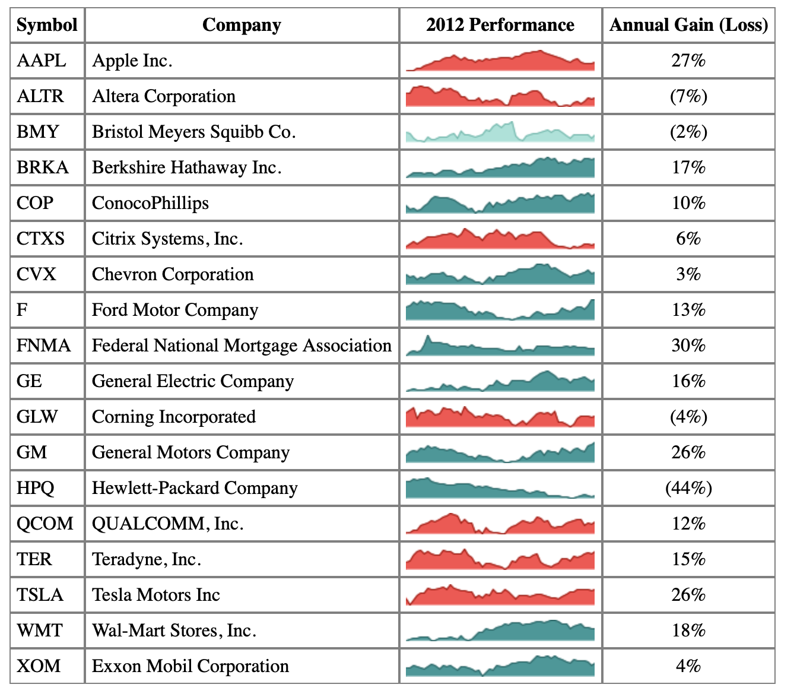
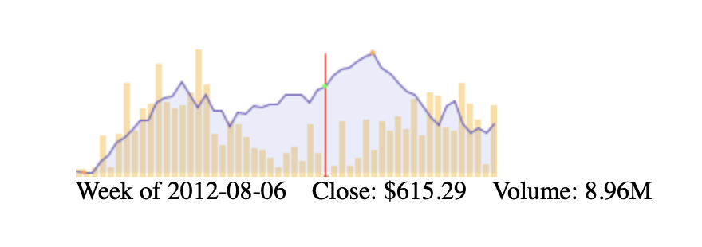

在页面中整合图表
表格中绘制多个sparkline
页面结构
1 | <table> |
1 | table { |
绘制图表
默认样式
1
2
3
4
5
6
7
8
9var sparkline_default = {
lineColor: '#006363',
fillColor: '#2d9999',
spotColor: false,
minSpotColor: false,
maxSpotColor: false,
enableTagOptions: true,
tagOptionsPrefix: 'data-'
};可以通过以
data-为前缀设置自定义属性，并在sparkline()中添加一些选项1
2
3
4
5
6<tr>
<td>BMY</td>
<td>Bristol Meyers Squibb Co.</td>
<td class='sparkline' data-LineColor='#5ab7aa' data-FillColor='#a2e3d9'>32.86,32.46,...,32.24</td>
<td>(2%)</td>
</tr>1
2
3
4var sparkline_default = {
enableTagOptions: true,
tagOptionsPrefix: 'data-'
};指定class样式
1
2
3
4var sparkline_barclays = $.extend({}, sparkline_default, {
lineColor: '#a50000',
fillColor: 'fe4c4c'
});绘制
1
2$('tr:not(.barclays) .sparkline').sparkline('html', sparkline_default);
$('tr.barclays .sparkline').sparkline('html', sparkline_barclays);
结果展示

更复杂的sparkline
原始数据
1 | var stock = [ |
创建复合图表
1 | $('#stock .chart').sparkline( |
添加注释
1 | .on('sparklineRegionChange', function(ev) { |
